Areas we serve
MaliHaus works with property owners across South Florida, Central Florida, North Florida and selected markets nationwide. Whether you are dealing with repairs, tenants, an inheritance, financial pressure or another complicated situation, our team can review the property and help you understand the available next step.
The markets MaliHaus has worked in longest, from South Florida up through Central and North Florida.
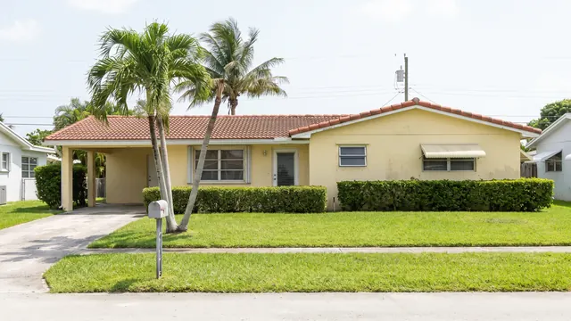
One of the markets MaliHaus knows best, covering everything from coastal condominium ownership to inland single family homes carrying deferred maintenance.
Explore This Market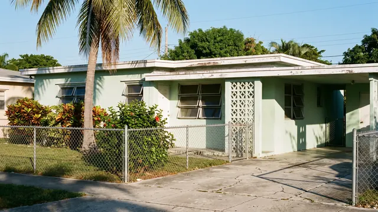
Complicated ownership is common here, from properties held across generations to homes owned by people who now live in another country.
Explore This Market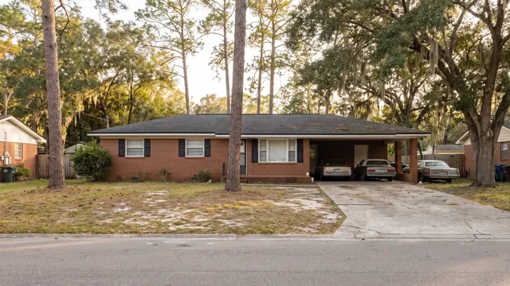
A city large enough that two properties a few miles apart can present entirely differently. Each one is assessed on its own condition.
Explore This Market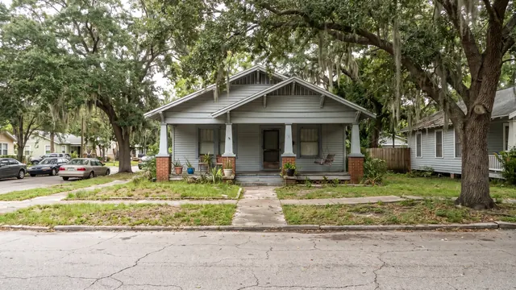
Older homes carrying deferred maintenance and rental properties that have stopped paying for the work they need are frequent reasons owners call.
Explore This Market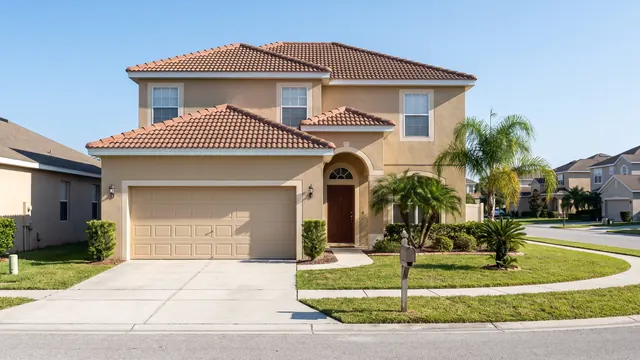
A market where a large share of owners live somewhere else, which makes repairs, tenants and paperwork harder to manage.
Explore This MarketMarkets we serve through our own purchasing capacity and our national investor network. These are areas we work in, not separate MaliHaus offices.
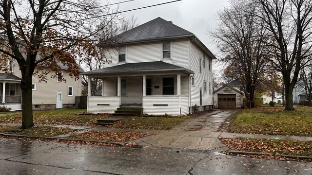
Vacant properties and rentals owned from elsewhere are two of the most common reasons owners here get in touch.
Explore This Market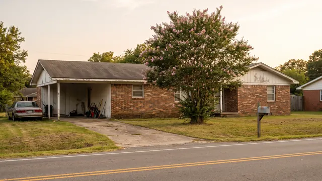
A market where a large share of single family homes are owned as rentals, often by people who live a long way away.
Explore This Market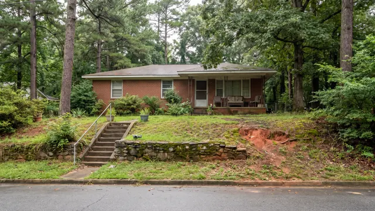
Family property held for a long time, sometimes with ownership that was never formally sorted out, is a frequent starting point here.
Explore This Market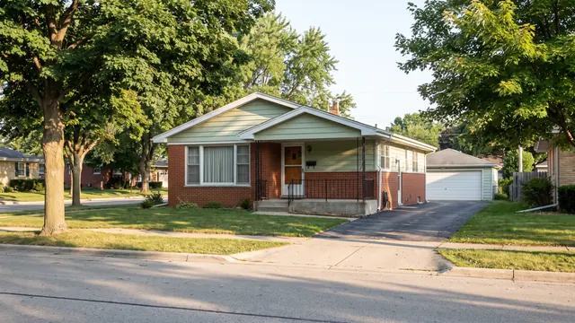
The metropolitan area spans a state line, so the first thing worth establishing is exactly where a property sits.
Explore This Market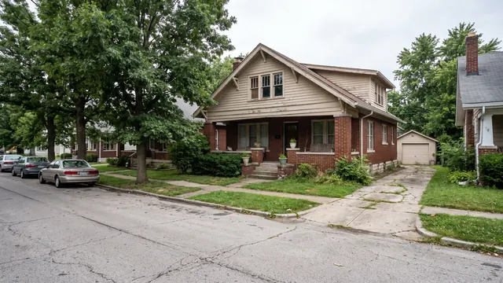
Rental properties that have stopped justifying the work, and homes carrying repairs the owner does not want to take on.
Explore This MarketOlder homes with structural, basement or water problems that make a conventionally financed sale difficult.
Explore This Market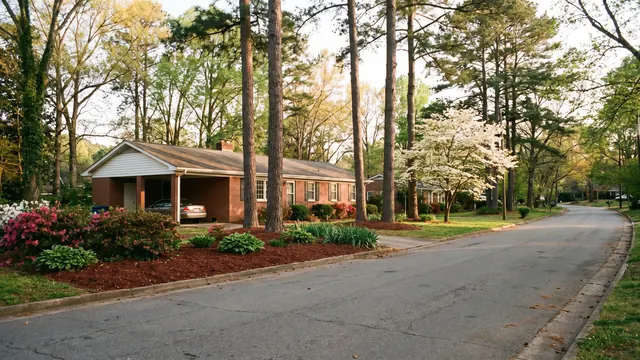
Job moves and unsold listings are two of the most common reasons owners in this market get in touch.
Explore This Market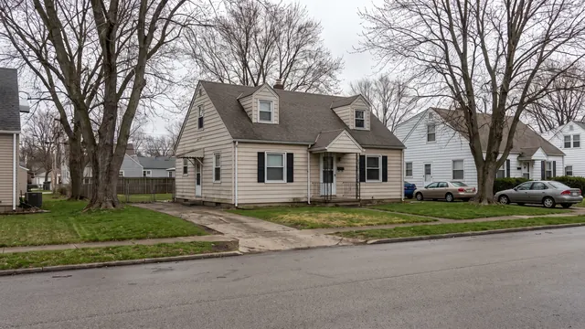
Empty properties and inherited homes that nobody has been able to make a decision about.
Explore This Market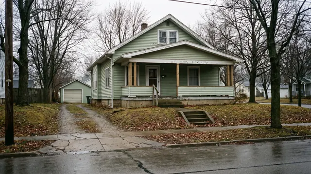
Rentals that have run out of road and older homes where the repair list has grown past what an ordinary buyer will take on.
Explore This Market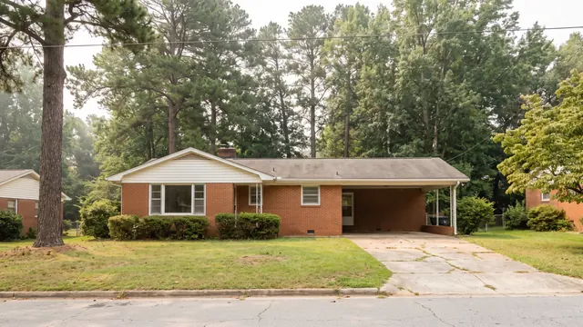
Inherited family homes and long held rentals, in a market MaliHaus covers alongside neighbouring Winston-Salem.
Explore This Market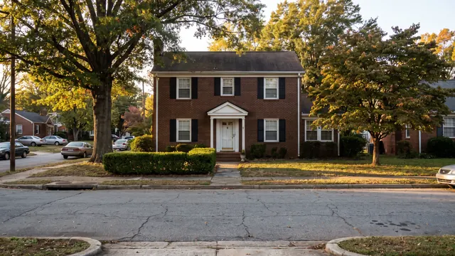
Long held family homes, downsizing moves and estates, covered alongside neighbouring Greensboro.
Explore This MarketEvery property is assessed against all three before anyone quotes a number. Which one applies depends on the property, its condition and the scope of the work.
We complete a full property inspection to evaluate its condition, repair requirements and overall project scope. If the property meets our purchasing criteria, we move forward using our own cash with no lender financing to fall through.
If the project carries more risk than we want to take on alone, we may, with your written approval, complete select repairs while the property is under contract. By investing our own money first, we make the home more attractive to our investor partners and demonstrate that we have real skin in the game. That commitment gives our partners greater confidence to join the purchase and complete the project with us.
Through our partnership with a national real estate syndicate, we can present your property to investors across the country. Qualified buyers can review the opportunity and compete to purchase it, creating exposure beyond the local market.
Share the address, condition of the property and the situation you are facing.
The MaliHaus team reviews the property, the repair requirements, the local market and the available purchase route.
MaliHaus explains which of the three selling approaches may fit the property. The owner decides whether the proposed solution works for them.
Every situation below applies across every market we serve.
A deadline, a move or a change of plan means the traditional route is too slow. We look at the property and your timing together.
Read more →Repairs, taxes, a house full of belongings and family members who each want something different. Speak to us before you spend anything on it.
Read more →Missed payments or a notice from the lender. Understanding the options early usually leaves more of them open.
Read more →Repairs, vacancies, difficult tenants or returns that no longer justify the work. Tenanted properties are reviewed as they are.
Read more →Roof, systems, structure or years of deferred maintenance. Ask for a review before you spend anything on renovations.
Read more →Costs, security and code issues that grow the longer it sits. Reviewed in its current condition, with no restoration required first.
Read more →Repairs, tenants and paperwork handled from hundreds of miles away. Reviewed remotely, without repeated trips.
Read more →Months on the market, or a sale that collapsed at the last stage. Another perspective on why, and on what else is available.
Read more →You do not need to diagnose the problem or choose the right page. Tell us about the property, your circumstances and the outcome you want. The MaliHaus team will review the information and let you know whether it may be able to help.